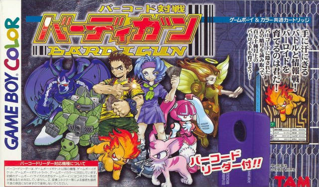
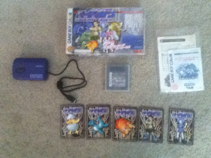
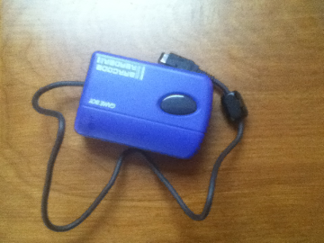
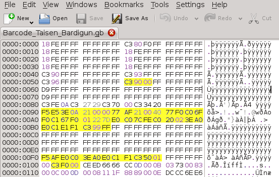
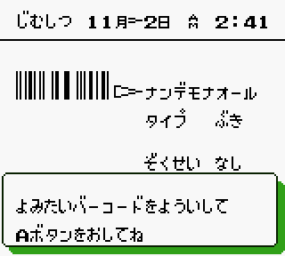

Source: GameFAQs.com
Chasing White Whales
A while ago on Reddit, we discussed some of our so-called "White Whales" of emulation, things that have not yet been emulated but many of us are eager to see happen one of these days. I posted my own list of things I would like to see emulated, mostly stuff related to Nintendo's handhelds. There are a lot of obscure add-ons and accessories that make many Game Boy and Game Boy Advance games rather unique to emulate. From solar sensors in the Boktai games, to mobile online connectivity through cellular networks, and even sonar-based fishing. I'm the kind of person who views video games as cultural works. Whether they're art or entertainment or some strange mix doesn't matter to me. What is important, however, is that video games are a special medium that needs to be preserved. Unfortunately, so much of the older Game Boy stuff is frightfully unemulated, undocumented, and ignored with regards to some of the more exotic titles.
Case-in-point: Barcode Taisen Bardigun. This game used a barcode reader, much like the GBA's e-Reader, but years before Nintendo officially pushed the concept of card-scanning gameplay. Unlike the e-Reader, Barcode Taisen Bardigun's reader only ever worked with... Barcode Taisen Bardigun. For the record, there was another earlier barcode reader on the Game Boy (called the Barcode Boy, cute if not unoriginal) that did work with multiple games. Digressing, Barcode Taisen Bardigun (further shortened to BTB for the rest of this article), is a strange case when talking about video game history, mainly due to the fact that virtually no useful information about it exists. I call it a "black hole": nothing pops up on Wikipedia, there's only one brief video up on YouTube (that was only just posted this year), and there are no FAQs on sites like GameFAQs. I found a small handful of screenshots, but only from the first few segments of the game, so nothing really interesting. Besides the release date and a cheat code, the only other things Google tells me is where to find the ROM on dozens of shady websites. The internet offered no details about how the game actually plays, how the cards were used and read, what was the storyline, or anything of that nature. For all intents and purposes, BTB had been forgotten, abandoned by time to fade into oblivion.
Screw that. I refused to accept that something like this could happen. So I've had BTB on my list for a while as something I would personally try to preserve. We have no information about BTB because no one was curious or motivated enough to sit down and document anything, but that changed recently. While browsing eBay to fill out my NDS collection, I checked out listings for the Barcode Boy or BTB. To my surprise, I stumbled upon a newly-listed BIN for a Complete-In-Box copy that was available at what I believed a fair and decent price (free shipping too). My fingers couldn't resist clicking, so now I own the game, the manual, 5 cards, and the card reader.
 
Immediately, I scanned the manual and cards at 600dpi. I'm still trying to translate it all; my knowledge of Japanese is probably okay, but kinda limited to toddler-level proficiency. So far, from what I can tell, it's yet another 90s monster game where you breed, fight, trade, and collect the little buggers (called "Bardi" in the game if I'm reading it correctly). Barcodes act like spells or magic power of some sort. When you scan a card, you can give a particular monster a boost. Either the game takes place on a fantasy continent called "Codenia", or that's where the monsters came from and now they're popping up all over the world. Anyway, the game itself isn't mind-blowing or even noteworthy, but what did hold my attention was that card reader. How did it work? What made it tick? And most importantly, how can we emulate this and preserve it for future generations? It was time to put on my reverse-engineering hat and crack open the hardware. Here we enter terra incognita, the great digital unknown, and quite literally the edge of emulation.
Cracking the barcode
You'll have to excuse me if that last statement makes me sound like a huge nerd; I love this stuff. So where do we start? First order of business is to grab the tools necessary for hardware debugging. For this little adventure, I relied on a Joey Squinson (Gen 2) for dumping game carts and saves, a 64M Smart Card (flashcart) for homebrew hacking, an old AGS-001, and of course my emulator GBE+. Using the Joey Squinson, it was trivial enough to dump a 100% accurate copy of the game and store the ROM on my PC. The next step was to do some snooping around via emulation. BTB's card reader communicates with the Game Boy through Serial Input-Output, aka the EXT port. With GBE+'s debugger, I got a basic idea of what was going on. During the scanning process, the Game Boy continually fires off requests to the reader. BTB kept blasting the same byte over and over again (0xFF) and subsequently timing out after about 9 seconds. This behavior was understandable given that the reader was completely unemulated in GBE+, which was functionally the same as emulating a Game Boy disconnected from the reader.
This didn't reveal much; I needed to go deeper. I needed to know exactly what happens when a Game Boy communicates with the reader. I needed to know what kind of bytes were being sent back and forth between the two devices. For the next step, I had to capture the responses the reader sends to the Game Boy when it scans a card successfully. But how to go about this? It'd be awesome if I could have just connected the reader to my PC and have it interface with GBE+, but that wasn't going to happen. An idea struck me: why not hack the game and have the game itself save the responses? The plan soon boiled down to editing the original ROM on my PC, uploading the hacked version to the 64M Smart Card, running the flashcart while hooked up to the reader, saving the results of the scan somewhere on the cart, then using the Joey Squinson to download the data for processing and analysis. It sounds complicated, but it's actually a pretty elegant solution, in my opinion

For the hack, only a small amount of code inside the original ROM needed to be modified or added.
The beauty of using a flashcart with a hacked version of BTB is that for the most part, the modified ROM will act almost exactly like the original. It only deviates during key points when serial data needs to be handled and a few cycles to set up a custom variable in RAM when the game initially boots. BTB uses what's called an MBC3; this a the type of Game Boy cartridge that allows data to be saved in battery-backed RAM. Essentially, the game has a save file. For this hack, the Game Boy was commanded to record every byte it received from the reader into this RAM. That part was pivotal since it allowed me to retrieve the data after shutting off the Game Boy. The Game Boy has a hardware interrupt that the executes whenever it finishes sending one byte via the link cable; my hack intercepted the original interrupt vector to briefly copy data to saved RAM before returning to the original code. The rest of the game remains undisturbed, and the barcode scanner is none the wiser, thus we can trust the data coming in to be clean and unaltered.
As expected, the hacked version of BTB ran perfectly on the flashcart, and it was able to scan and recognize cards just like the original BTB cartridge. Best of all, the data the card reader sent was captured. Using the Joey Squinson, I was able to copy the save file for further examination. For good measure, I actually made two save files from two different attempts at grabbing the scanner's data. I wanted to know if the scanner sent back the exact same data for each scan, or if the data changed slightly for whatever reason. When dealing with scanners, there are a lot of factors that could affect final output, for example here, swipe speed or the angle of the card swipe. My gut told me each scan was going to have slightly different data, but I needed to know for sure, and I needed to see how different two scans could be.
With the raw data on hand, I opened up both save files in a hex editor. I noticed right away that the reader responded with a large amount of zeroes; I surmised this was the default response it gave while it was "inactive" so-to-speak, while the button is not being held down. Once the button is pressed, however, the reader starts sending interesting data. A wall of bytes (0xFF) came up, followed by a bunch of random-looking hex values, then more and more 0xFF bytes. Immediately it was obvious that those random-looking bytes were the barcode data being sent to the Game Boy, the most relevant data in the binary file. While at first glance they might have looked like a bunch of meaningless digits, I noticed a pattern right away. There were always a series of bytes, then some zeroes, then more bytes, then more zeroes. The lengths of each varied. Sounds like a barcode doesn't it? Bingo!
My initial conclusion was that each byte represented what the reader thought was a black or white part of the barcode. At first, I thought values 0x80-0xFF meant the scanner was encountering the color white, while values 0x00-0x7F were black. It was a good guess I suppose; maybe the range represented the degree to which the scanner believed a segment was black or white. However, this didn't make a lot of sense the more I looked at it. Barcode reading should be pretty much, well, black and white, cut and dry. Why express black or white as a range of values when a 0 or 1 does the job just as well? So I went back to the data and had another look, and a very surprising observation struck me. There was something odd about the bytes, another pattern that became apparent. To illustrate this, let's look at some sample data from the very beginning of the barcode:
00 00 7F FE 00 01 FF FF FF FF FF C0
That's what it looks like in hexadecimal. Now viewing it in binary...
00000000 00000000 01111111 11111110 00000000 00000001 11111111 11111111 11111111 11111111 11111111 11111111 1100 0000
Looks like a barcode, doesn't it?
A review of the data in both save files confirmed my suspicions. Barcode data is represented by groups of zeroes and ones. The length of each group corresponds to the length of each bar being scanned, so the more zeroes or ones present, the longer the bar and vice versa. The above sample draws a short black bar (black = 0, white = 1), a short white bar, another short black bar, and a long white bar. This pattern matched the start of the barcode that I had scanned, and the rest of the data agreed with the full barcode when I went back and double-checked everything. And just like that, the secret had been revealed. I also confirmed that the two save files were indeed different, so each scan was unique. Some bars would be represented with more bits in one save file or less bits in another save file. It became evident that only the relative length of the zeroes and ones mattered most, the pattern of how long each bar was. I assume BTB has code for handling these variations from the scanner itself, so it can recognize the bars and the data inside each barcode.
Raising the bar for emulation
Now that that's sorted, time to tackle the big question: how do we emulate this? Well, the card reader happens to be a very simple device in comparison to other Game Boy accessories such as the GB Printer or GB Mobile Adapter. There is no protocol, no commands sent, and virtually no processing necessary. The Game Boy continually polls for data, and when the reader is ready, it simply pushes a data stream. With regards to emulation, this is quite trivial to implement. An emulator only needs to set up an array for the barcode data, then whenever the emulated Game Boy communicates over the serial port, it retrieves data from the array (sequentially of course). The code in the ROM itself handles converting the barcode data into numbers for its own purposes, so it's not even necessary to understand the underlying barcode format. The emulator doesn't need to have a decoder for UPC or JAN or any other type of barcode.
But how do we get the barcode data in the first place? How do we get the streams of zeroes and ones that make up the barcode? Basically, how do we "dump" or "rip" the barcode data from a card onto a computer? One way of dumping the barcodes is to use a hacked ROM like I did and record the data the reader sends as a binary file. That binary file represents all the responses the reader sent back to the Game Boy while scanning a card, so to recreate the scanning process, an emulator would just have to load the binary file and send that same data back to the virtual Game Boy. This method works perfectly in practice, and in fact was the very route I chose to test an emulated card scan in GBE+. Without further ado, I present to you a brief video of this type of emulation in action. I'm fairly certain this is the first such documented event in the world of Game Boy emulation:
Not very exciting, but proof that it works. The game displays text from the card instead of "???" and an error message.
This method is fine and dandy, but it's a bit cumbersome. Each card needs to be swiped while running the hacked version, then the binary data needs to be pulled from the game save. The biggest issue is that it requires hardware that's not immediately available to many people. So in terms of preservation this is a problem because someone would need the cards, the scanner, and a flashcart at a minimum. Seems a lot just to get barcode data on a PC, right? Can't we just look at the barcode itself and figure out what the data sent to the Game Boy should be? It turns out that's exactly what we can do.
As I mentioned earlier, I made 600dpi scans of all the printed material for BTB, even the cards. With just a scanned image of the barcodes, it's possible to recreate the data the reader sends over the serial port. The theory is that bars of a certain length will produce a relatively consistent number of zeroes or ones when scanned. If we focus on one bar and count the number of bits it produces when scanned, we can predict the amount of bits other bars of different lengths will produce. Using the smallest bar as a baseline, it had a length of 8 pixels at 600dpi and it roughly produced anywhere from 14-16 bits when scanned. Another bar that measured about 15 pixels produced 27-29 bits when scanned. Yet another bar measuring about 24 pixels produced 43-45 bits when scanned. With these observations in hand, I saw that the number of bits produced scaled pretty well with the actual length of the bar, about 15 bits for every 8 pixels. From all of this I came up with some rough equations:
Ratio of Pixels @ 600dpi to scanned bit count = (15.0 / 8.0) = 1.875
Approximate bit count = Length of Bar in Pixels @ 600dpi * 1.875
So how accurate is that formula? It works pretty well actually. To test it out, I made a small C++ program that takes a single horizontal line from one of the scanned barcodes and spits out a binary file after counting the pixels found in each bar. Feeding the binary file back into GBE+ provided the same successful results. When using the formula, it's possible to get consistent dumps of the barcode data, more or less, and certainly less onerous than the first method of extracting data after a real card swipe.

Again, it doesn't look like much, but here are two barcode scans being emulated for the first time ever.
One down, more to go
So this story ends on a positive note. A small bit of gaming history was preserved. What was once thrown away to the passage of time has been pulled from the brink. I traveled to the edge of emulation and brought something back before it was lost to the void. There I go again sounding overly dramatic, but I can't help myself. Archiving games and ensuring they're functional and playable for the future really matters to me. There is only so much time left on the clock for some games, and only a handful of us possess the technical skills needed to make these things run in emulators. Video game emulation can't just be about running a majority of games for a system or just the popular ones; the aim should be to run everything, eventually. To that end, I still have a long list of white whales that I plan to hunt down; Game Boy emulation is far from complete.
Now that this little adventure has come to a close, what's next? I plan on putting the manual on archive.org and seeing if anyone is interested in translating it as well. The cards will be online as well, along with sample C++ code for automatically converting an image of the barcode into a binary file. And GBE+ is FOSS, so anyone can look at the source code to see how the card reader is emulated. Lastly, I've also released a gist containing all the technical information I managed to unearth.
One down, but I can't rest until someone takes care of the others on my list. I've got my eyes set on a new target, but to keep things interesting, my lips are sealed. Let's just say it should make a splash if everything goes according to plan.